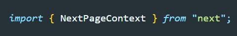

Допустим у нас есть компонент у которого му создаем метод getServerSideProps
Через контекст мы можем получать Query параметры. Next имеет уже готовый интерфейс описывающий контекст, который называется NextPageContext/ Для того что бы его использовать сначала его импортируем
Теперь если вызвать у контекста список его методов (ctrl + space) то мы увидим вот такую картину
Там мы видим свойство query, если обратиться к нему то дальше мы уже ничего не увидим. Как нам указать определенные query параметры. Нам надо создать свой интерфейс который будет наследоваться от NextPageContext и в котором мы переопределим типизацию свойства query. Допустим наш URL выглядит так:
Переопределение типизации контекста будет выглядеть вот так:
Теперь передадим контексту этот интерфейс и тогда в автокомплите будут доступны наши query параметры
Точно так же мы можем поступать со свойством params